Tools for fracture simulations¶
Module contents for quippy.crack:
Classes
CrackParams([filename,validate]) |
This type contains all the parameters for a crack simulation, each of which is described briefly below. |
ConstantStrainRate(orig_height, delta_strain) |
Constraint which increments epsilon_yy at a constant strain rate |
Functions
crack_is_edge_atom(slab,i,edge_gap) |
Returns true if atom i is near to an open surface of slab. |
||
crack_parse_name(crackname) |
Parse crack name in the format is (ijk)[lmn], with negative numbers denoted by a trailing b (short for bar), e.g. |
||
crack_hybrid_calc_args(...) |
|
||
crack_g_to_k(g,e,v,[mode]) |
Convert from energy release rate  to stress intensity factor to stress intensity factor  |
||
percolation_step(grid) |
|
||
crack_setup_marks(crack_slab,params) |
|
||
crack_update_selection_crack_front(at,params) |
|
||
crack_is_topbottom_edge_atom(slab,i,edge_gap) |
Returns true if atom i is the topbottom surface of slab |
||
crack_make_slab(params,classicalpot) |
|
||
crack_apply_strain_ramp(at,g1,g2,d1,d2,d3,d4) |
|
||
crack_strain_to_g(strain,e,v,height) |
Calculate energy release rate from strain using :math:G = \frac{1}{2} \frac{E}{1-\nu^2} \epsilon^2 h:math: from thin strip result. |
||
crack_find_tip_coordination(...) |
Return  coordinate of rightmost undercoordinated atom coordinate of rightmost undercoordinated atom |
||
in_ellipse(d,ellipse) |
Return true if the point d is within an ellipse centred at the origin with the ,  , and , and  radii specifeid in the vector radii specifeid in the vector ellipse. |
||
crack_find_tip_local_energy(at,params) |
|
||
crack_update_selection(at,params) |
|
||
crack_mm_calc_args(...) |
|
||
crack_check_coordination_boundaries(at,params) |
|
||
select_ellipse(at,ellipse,ellipse_bias,list,c) |
Select atoms in ellipse centred on an atom and with given principal radii | ||
crack_uniform_load(...) |
Rescale atoms in slab, with atoms in front of either crack tip strained in y direction by strain and atoms behind crack tip rigidly shifted to keep top and bottom edges flat. |
||
crack_g_to_strain(g,e,v,height) |
Calculate 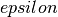 from , inverse of above formula. |
||
crack_k_to_g(k,e,v,[mode]) |
Convert from stress intensity factor to energy release rate |
||
crack_update_connect(at,params) |
Use hysteretic version of calc_connect() so we can use relative cutoffs Update the connectivity of a crack slab. | ||
crack_find_surface_atoms(at) |
|
||
crack_find_tip(at,params) |
|
||
crack_calc_load_field(...) |
|
||
crack_apply_load_increment(at,[g_increment]) |
Increase the load by adding the the load displacement field to the atomic positions. | ||
crack_measure_g(at,e,v,orig_height) |
Measure the current height of slab and calculate energy release rate from current and original heights and elastic constants  and and  , using the equation :math:`` G = frac{1}{2} frac{E}{1-nu^2} frac{{h - h_0}^2}{h_0} :math:`` where 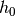 is the original height and , using the equation :math:`` G = frac{1}{2} frac{E}{1-nu^2} frac{{h - h_0}^2}{h_0} :math:`` where 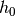 is the original height and  the new height. the new height. |
||
crack_k_field(...) |
Calculate Irwin K-field stresses and/or displacements for all atoms in at. |
||
crack_find_tip_percolation(at,params) |
Locate crack tips within at using a percolation algorithm. |
||
crack_update_selection_coordination(at,params) |
Update QM selection region for a crack configuration using the nn and changed_nn properties and the CrackPos parameter from the atoms structure, as well as the selection parameters in params. |
||
crack_make_seed(crack_slab,params) |
|
||
crack_check_coordination(...) |
|
||
crack_print(*args, **kwargs) |
Print crack slab to XYZ file, using properties defined in ‘params%io_print_properties’ or all properties if ‘params%io_print_all_properties’ is true. | ||
crack_strain_energy_release_rate(at[, bulk, ...]) |
Compute strain energy release rate G from elastic potential energy in a strip | ||
crack_strain(at) |
Returns strain of crack specimen | ||
crack_find_griffith_load(a, b, pot[, relax]) |
Given two configurations (a, b) which differ by one broken bond, find the Griffith load, that is the load at which a and b have the same energy accorinding to the model potential pot. | ||
stress_intensity_factor(at) |
Returns stress instensity factor for mode I loading (K_I) in MPa sqrt(m) | ||
make_crack_advance_map(atoms[, tol]) |
Find mapping from atom indices to the index of atom one step ahead of them in the crack propagation direction (i.e. | ||
find_crack_tip_coordination(atoms[, ...]) |
Return position of crack tip in atoms, based on atomic coordination. | ||
irwin_modeI_crack_tip_stress_field(K, r, t) |
Compute Irwin singular crack tip stress field | ||
strain_to_G(strain, E, nu, orig_height) |
Convert from strain to energy release rate G for thin strip geometry | ||
G_to_strain(G, E, nu, orig_height) |
Convert from energy release rate G to strain for thin strip geometry | ||
get_strain(atoms) |
Return the current strain on thin strip configuration atoms | ||
get_energy_release_rate(atoms) |
Return the current energy release rate G for `atoms | ||
get_stress_intensity_factor(atoms) |
Return stress intensity factor K_I | ||
fit_crack_stress_field(atoms[, r_range, ...]) |
Perform a least squares fit of near-tip stress field to Irwin solution | ||
find_crack_tip_stress_field(atoms[, ...]) |
Find the position of the crack tip by fitting to the Irwin K-field solution | ||
plot_stress_fields(atoms[, r_range, ...]) |
Fit and plot atomistic and continuum stress fields | ||
thin_strip_displacement_y(x, y, strain, a, b) |
Return vertical displacement ramp used to apply initial strain to slab | ||
print_crack_system(crack_direction, ...) |
Pretty printing of crack crystallographic coordinate system |
Attributes
| Name | Value |
|---|---|
MAX_PROPERTIES |
100 |
MAX_MD_STANZA |
5 |
-
class
quippy.crack.CrackParams([filename, validate])¶ This type contains all the parameters for a crack simulation, each of which is described briefly below.
Initialise this CrackParams structure and set default values for all parameters. WARNING: many of these defaults are only really appropriate for diamond structure silicon fracture.
Parameters: filename : input string(len=-1), optional
validate : input int, optional
References
Routine is wrapper around Fortran routine
__init__initialisedefined in file src/Utils/crackparams.f95. Class is wrapper around Fortran typeCrackParamsdefined in file src/Utils/crackparams.f95.Attributes
classical_argsArguments used to initialise classical potential classical_args_strArguments used by Calc Potential classical_force_reweightFactor by which to reduce classical forces in the embed region. crack_align_yVertical alignment turned on crack_apply_initial_loadIf true, apply initial loading field to crack slabcrack_bulk_filenameInput file containing primitive cell crack_check_coordination_atom_typeAtom type we check the coordination for crack_check_coordination_critical_nneighCritical number of neighbours in the connectivity checking crack_check_coordination_regionRegion (+/- around y=0 level) where the atomic coordination is checked. crack_check_surface_coordinationChecking of the surface coordination before generating the crack seed crack_curvatureCurvature used when crack_curved_front=T crack_curved_frontIf true, initialise slab with a curved crack front crack_dislo_seedatom at the core of the dislocation crack_double_endedIf true, we do a double ended crack with periodic boundary conditions along direction.crack_edge_fix_tolHow close must an atom be to top or bottom to be fixed. crack_elementElement to make slab from. crack_fix_dipolesIf true, we keep fixed dipoles for atoms at the edges. crack_fix_dipoles_tolHow close must an atom be to top or bottom to keep fixed its dipole. crack_fix_sidesIf true fix atoms close to left and right edges of slab crack_free_surfacesIf true, crack is 3D with free surfaces at z= +/- depth/2 crack_front_alphaValue of alpha to use when tip_method=alpha_shape crack_front_angle_thresholdMaximum bearing for segments to be included in crack front crack_front_window_sizeSize of windows along crack front. crack_gInitial energy release rate loading in J/m:math:^2 (override strain) crack_g_incrementRate of loading, expressed as increment in G (override strain_increment) crack_graphene_notch_heightHeight of graphene notch. crack_graphene_notch_widthWidth of graphene notch. crack_graphene_thetaRotation angle of graphene plane, in radians. crack_heightHeight of crack slab, in AA{}. crack_initial_velocity_fieldIf true, initialise velocity field with dU/dc crack_lattice_guessGuess at bulk lattice parameter, used to obtain accurate result. crack_load_interp_lengthLength over which linear interpolation between k-field crack_loadinguniformfor constant load,crack_nameCrack name, in format (abc)[def]with negative indices denoted by a trailingb(for bar), e.g.crack_num_layersNumber of primitive cells in directioncrack_ramp_end_gLoading at end of ramp for the case crack_loading="ramp"crack_ramp_lengthLength of ramp for the case crack_loading="ramp"crack_ramp_start_lengthLength of the region in between the crack tip and the start of the ramp for the case crack_loading="ramp"crack_relax_bulkIf true (default) relax bulk cell using classical potential crack_relax_loading_fieldShould makecrackrelax the applied loading fieldcrack_rescale_xRescale atomsatoms in x direction by v crack_rescale_x_zRescale atomsatoms in x direction by v and in z direction by v2 crack_seed_embed_tolAtoms closer than this distance from crack tip will be used to seed embed region. crack_seed_lengthLength of seed crack. crack_slab_filenameInput file to use instead of generating slabs. crack_strainInitial applied strain crack_strain_incrementRate of loading, expressed as strain of initial loading crack_strain_zone_widthDistance over which strain increases. crack_structureStructure: so far diamondandgrapheneare supportedcrack_thermostat_ramp_lengthLength of thermostat ramp used for stadium damping at left and right edges crack_thermostat_ramp_max_tauValue of thermostat tau at end of ramp, in fs. crack_tip_grid_sizeSize (in A) of grid used for locating crack tips crack_tip_methodOne of coordination,percolation,local_energyoralpha_shapecrack_tip_min_separationMinimum seperation (in A) between a pair of crack tips for them to be considered distinct crack_vacuum_sizeAmount of vacuum around crack slab. crack_widthWidth of crack slab, in AA{}. crack_x_shiftShift required to get “nice” surface terminations on vertical edges crack_y_shiftShift required to align y=0 with centre of a vertical bond. crack_zInitialised automatically from crack element fit_hopsNumber of hops used to generate fit region from embed region fit_methodMethod to use for force mixing: should be one of fit_spring_hopsNumber of hops used when creating list of springs force_integration_end_fileXYZ file containing ending configuration for force integration. force_integration_n_stepsNumber of steps to take in force integration hack_fit_on_eqm_coordination_onlyOnly include fit atoms that have coordination number equal to md_eqm_coordination(used for graphene).hack_qm_zero_z_forceZero component of all forces (used for graphene)io_backupIf true, create backups of check files io_checkpoint_intervalInterval between writing checkpoint files, in fs. io_checkpoint_pathPath to write checkpoint files to. io_mpi_print_allPrint output on all nodes. io_netcdfIf true, output in NetCDF format instead of XYZ io_print_all_propertiesIf true, print all atom properties to movie file. io_print_intervalInterval between movie XYZ frames, in fs. io_print_propertiesList of properties to print to movie file. io_timingIf true, enable timing (default false) io_verbosityOutput verbosity. minim_eps_guessInitial guess for line search step size  .
.minim_fire_dt0If using fire_minim, the initial step size minim_fire_dt_maxIf using fire_minim, the maximum step size minim_linminroutineLinmin routine, e.g. minim_max_stepsMaximum number of minimisation steps. minim_methodMinimisation method: use cgfor conjugate gradients orsdfor steepest descent.minim_minimise_mmShould we minimise classical degrees of freedom before each QM force evaluation minim_mm_args_strArgs string to be passed to MM calc() routine minim_mm_eps_guessInitial guess for line search for MM minimisationminim_mm_linminroutineLinmin routine for MM minimisation minim_mm_max_stepsMaximum number of cg cycles for MM minimisation minim_mm_methodMinim method for MM minimisation, e.g. minim_mm_tolTarget force tolerance for MM minimisation minim_print_outputNumber of steps between XYZ confgurations printed minim_tolTarget force tolerance - geometry optimisation is considered to be qm_argsArguments used to initialise QM potential qm_args_strArguments used by QM potential qm_buffer_hopsNumber of bond hops used for buffer region qm_calc_force_errorDo a full QM calculation at each stage in extrap and interp to measure force error qm_clustersShould we carve clusters? Default true. qm_cp2kEnable CP2K mode. qm_even_electronsDiscard a hydrogen if necessary to give an overall non-spin-polarised cluster qm_extra_args_strExtra arguments passed to ForceMixing potential qm_force_periodicForce clusters to be periodic in direction.qm_hysteretic_bufferIf true, manage the buffer region hysteritcally qm_hysteretic_buffer_inner_radiusInner radius used for hystertic buffer region qm_hysteretic_buffer_nneighb_onlyShould hysteretic buffer be formed by nearest neighbor hopping? qm_hysteretic_buffer_outer_radiusOuter radius used for hystertic buffer region qm_hysteretic_connectEnable hysteretic connectivity qm_hysteretic_connect_cluster_radiusRadius other which to keep track of hysteretic connectivity info. qm_hysteretic_connect_inner_factorInner bond factor. qm_hysteretic_connect_outer_factorOuter bond factor. qm_little_clustersOne big cluster or lots of little ones? qm_randomise_bufferRandomise positions of outer layer of buffer atoms slightly to avoid systematic errors. qm_rescale_rIf true, rescale space in QM cluster to match QM lattice constant qm_terminateTerminate clusters with hydrogen atoms qm_transition_hopsNumber of transition hops used for buffer region qm_vacuum_sizeAmount of vacuum surrounding cluster in non-periodic directions ( and at least).quasi_static_tip_move_tolHow far cracktip must advance before we consider fracture to have occurred. selection_cutoff_planeOnly atoms within this distance from crack tip are candidates for QM selection. selection_directionalityRequire good directionality of spring space spanning for atoms in embed region. selection_edge_tolSize of region at edges of crack slab which is ignored for selection purposes. selection_ellipsePrincipal radii of selection ellipse along , and in AA{}.selection_ellipse_biasShift applied to ellipses, expressed as fraction of ellipse radius in direction.selection_ellipse_bufferDifference in size between inner and outer selection ellipses, i.e. selection_max_qm_atomsMaximum number of QM atoms to select selection_methodOne of static,coordination,crack_frontselection_update_intervalintervals between QM selection updates, defaults to 0.0_dp meaning every stepsimulation_classicalPerform a purely classical simulation simulation_force_initial_load_stepForce a load step at beginning of simulation simulation_initial_stateInitial state. simulation_seedRandom number seed. simulation_taskTask to perform: md,minim, etc.Methods
any_per_atom_tau(*args, **kwargs)Parameters: print_([file])Print out this CrackParams structure read_xml(*args, **kwargs)Wrapper around Fortran interface read_xmlcontaining multiple routines:-
any_per_atom_tau(*args, **kwargs)¶ Parameters: ret_crackparams_any_per_atom_tau : int References
Routine is wrapper around Fortran routine
crackparams_any_per_atom_taudefined in file src/Utils/crackparams.f95.
-
print_([file])¶ Print out this CrackParams structure
Parameters: file : InOutputobject, optionalReferences
Routine is wrapper around Fortran routine
print_defined in file src/Utils/crackparams.f95.
-
read_xml(*args, **kwargs)¶ Wrapper around Fortran interface
read_xmlcontaining multiple routines:-
read_xml(xmlfile[, validate, error]) Parameters: - xmlfile (
InOutputobject) – - validate (input int, optional) –
- error (in/output rank-0 array(int,'i'), optional) –
Routine is wrapper around Fortran routine
crackparams_read_xmldefined in file src/Utils/crackparams.f95.- xmlfile (
-
read_xml(filename[, validate, error]) Read crack parameters from
xmlfileinto this CrackParams object. First we reset to default values by callinginitialise(this).Parameters: - filename (input string(len=-1)) –
- validate (input int, optional) –
- error (in/output rank-0 array(int,'i'), optional) –
Routine is wrapper around Fortran routine
crackparams_read_xml_filenamedefined in file src/Utils/crackparams.f95.
-
-
classical_args¶ Arguments used to initialise classical potential
-
classical_args_str¶ Arguments used by Calc Potential
-
classical_force_reweight¶ Factor by which to reduce classical forces in the embed region. Default is unity.
-
crack_align_y¶ Vertical alignment turned on
-
crack_apply_initial_load¶ If
true, apply initial loading field to crack slab
-
crack_bulk_filename¶ Input file containing primitive cell
-
crack_check_coordination_atom_type¶ Atom type we check the coordination for
-
crack_check_coordination_critical_nneigh¶ Critical number of neighbours in the connectivity checking
-
crack_check_coordination_region¶ Region (+/- around y=0 level) where the atomic coordination is checked.
-
crack_check_surface_coordination¶ Checking of the surface coordination before generating the crack seed
-
crack_curvature¶ Curvature used when crack_curved_front=T
-
crack_curved_front¶ If true, initialise slab with a curved crack front
-
crack_dislo_seed¶ atom at the core of the dislocation
-
crack_double_ended¶ If true, we do a double ended crack with periodic boundary conditions along
direction.
-
crack_edge_fix_tol¶ How close must an atom be to top or bottom to be fixed. Unit:~AA{}.
-
crack_element¶ Element to make slab from. Supported so far: Si, C, SiC, SiO
-
crack_fix_dipoles¶ If true, we keep fixed dipoles for atoms at the edges.
-
crack_fix_dipoles_tol¶ How close must an atom be to top or bottom to keep fixed its dipole. Unit:~AA{}.
-
crack_fix_sides¶ If true fix atoms close to left and right edges of slab
-
crack_free_surfaces¶ If true, crack is 3D with free surfaces at z= +/- depth/2
-
crack_front_alpha¶ Value of alpha to use when tip_method=alpha_shape
-
crack_front_angle_threshold¶ Maximum bearing for segments to be included in crack front
-
crack_front_window_size¶ Size of windows along crack front. Should be roughly equal to lattice periodicity in this direction.
-
crack_g¶ Initial energy release rate loading in J/m:math:^2 (override strain)
-
crack_g_increment¶ Rate of loading, expressed as increment in G (override strain_increment)
-
crack_graphene_notch_height¶ Height of graphene notch. Unit:~AA{}.
-
crack_graphene_notch_width¶ Width of graphene notch. Unit:~AA{}.
-
crack_graphene_theta¶ Rotation angle of graphene plane, in radians.
-
crack_height¶ Height of crack slab, in AA{}.
-
crack_initial_velocity_field¶ If true, initialise velocity field with dU/dc
-
crack_lattice_guess¶ Guess at bulk lattice parameter, used to obtain accurate result. Unit:~AA{}.
-
crack_load_interp_length¶ Length over which linear interpolation between k-field and uniform strain field is carried out
-
crack_loading¶ uniformfor constant load,rampfor linearly decreasing load along,
kfieldfor Irwin plane strain K-field,interp_kfield_uniformto linearly interpolate between k-field (at crack tip) and uniform at distancecrack_load_interp_lengthreduce_uniformfor reducing load
-
crack_name¶ Crack name, in format
(abc)[def]with negative indices denoted by a trailingb(for bar), e.g.(111)[11b0].
-
crack_num_layers¶ Number of primitive cells in
direction
-
crack_ramp_end_g¶ Loading at end of ramp for the case
crack_loading="ramp"
-
crack_ramp_length¶ Length of ramp for the case
crack_loading="ramp"
-
crack_ramp_start_length¶ Length of the region in between the crack tip and the start of the ramp for the case
crack_loading="ramp"
-
crack_relax_bulk¶ If true (default) relax bulk cell using classical potential
-
crack_relax_loading_field¶ Should
makecrackrelax the applied loading field
-
crack_rescale_x¶ Rescale atomsatoms in x direction by v
-
crack_rescale_x_z¶ Rescale atomsatoms in x direction by v and in z direction by v2
-
crack_seed_embed_tol¶ Atoms closer than this distance from crack tip will be used to seed embed region. Unit:~AA{}.
-
crack_seed_length¶ Length of seed crack. Unit:~AA{}.
-
crack_slab_filename¶ Input file to use instead of generating slabs.
-
crack_strain¶ Initial applied strain
-
crack_strain_increment¶ Rate of loading, expressed as strain of initial loading
-
crack_strain_zone_width¶ Distance over which strain increases. Unit:~AA{}.
-
crack_structure¶ Structure: so far
diamondandgrapheneare supported
-
crack_thermostat_ramp_length¶ Length of thermostat ramp used for stadium damping at left and right edges
-
crack_thermostat_ramp_max_tau¶ Value of thermostat tau at end of ramp, in fs.
-
crack_tip_grid_size¶ Size (in A) of grid used for locating crack tips
-
crack_tip_method¶ One of
coordination,percolation,local_energyoralpha_shape
-
crack_tip_min_separation¶ Minimum seperation (in A) between a pair of crack tips for them to be considered distinct
-
crack_vacuum_size¶ Amount of vacuum around crack slab. Unit:~AA{}.
-
crack_width¶ Width of crack slab, in AA{}.
-
crack_x_shift¶ Shift required to get “nice” surface terminations on vertical edges
-
crack_y_shift¶ Shift required to align y=0 with centre of a vertical bond. This value is only used for unknown values of
crack_name. Unit:~AA{}.
-
crack_z¶ Initialised automatically from crack element
-
fit_hops¶ Number of hops used to generate fit region from embed region
-
fit_method¶ Method to use for force mixing: should be one of begin{itemize}
item
lotf_adj_pot_svd— LOTF using SVD to optimised the Adj Pot itemlotf_adj_pot_minim— LOTF using conjugate gradients to optimise the Adj Pot itemlotf_adj_pot_sw— LOTF using old style SW Adj Pot itemconserve_momentum— divide the total force on QM region over the fit atoms to conserve momentum itemforce_mixing— force mixing with details depending on values ofbuffer_hops,transtion_hopsandweight_interpolation- item
force_mixing_abrupt— simply use QM forces on QM atoms and MM forces on MM atoms - (shorthand for
method=force_mixing buffer_hops=0 transition_hops=0) - item
force_mixing_smooth— use QM forces in QM region, MM forces in MM region and - linearly interpolate in buffer region (shorthand for
method=force_mixing weight_interpolation=hop_ramp) - item
force_mixing_super_smooth— as above, but weight forces on each atom by distance from - centre of mass of core region (shorthand for
method=force_mixing weight_interpolation=distance_ramp)
end{itemize}
- item
-
fit_spring_hops¶ Number of hops used when creating list of springs
-
force_integration_end_file¶ XYZ file containing ending configuration for force integration.
-
force_integration_n_steps¶ Number of steps to take in force integration
-
hack_fit_on_eqm_coordination_only¶ Only include fit atoms that have coordination number equal to
md_eqm_coordination(used for graphene).
-
hack_qm_zero_z_force¶ Zero
component of all forces (used for graphene)
-
io_backup¶ If true, create backups of check files
-
io_checkpoint_interval¶ Interval between writing checkpoint files, in fs.
-
io_checkpoint_path¶ Path to write checkpoint files to. Set this to local scratch space to avoid doing lots of I/O to a network drive. Default is current directory.
-
io_mpi_print_all¶ Print output on all nodes. Useful for debugging. Default .false.
-
io_netcdf¶ If true, output in NetCDF format instead of XYZ
-
io_print_all_properties¶ If true, print all atom properties to movie file. This will generate large files but is useful for debugging.
-
io_print_interval¶ Interval between movie XYZ frames, in fs.
-
io_print_properties¶ List of properties to print to movie file.
-
io_timing¶ If true, enable timing (default false)
-
io_verbosity¶ Output verbosity. In XML file, this should be specified as one of
ERROR,SILENT,NORMAL,VERBOSE,NERDorANAL
-
minim_eps_guess¶ Initial guess for line search step size
.
-
minim_fire_dt0¶ If using fire_minim, the initial step size
-
minim_fire_dt_max¶ If using fire_minim, the maximum step size
-
minim_linminroutine¶ Linmin routine, e.g.
FAST_LINMINfor classical potentials with total energy, orLINMIN_DERIVwhen doing a LOTF hybrid simulation and only forces are available.
-
minim_max_steps¶ Maximum number of minimisation steps.
-
minim_method¶ Minimisation method: use
cgfor conjugate gradients orsdfor steepest descent. Seeminim()inlibAtoms/minimisation.f95for details.
-
minim_minimise_mm¶ Should we minimise classical degrees of freedom before each QM force evaluation
-
minim_mm_args_str¶ Args string to be passed to MM calc() routine
-
minim_mm_eps_guess¶ Initial guess for line search
for MM minimisation
-
minim_mm_linminroutine¶ Linmin routine for MM minimisation
-
minim_mm_max_steps¶ Maximum number of cg cycles for MM minimisation
-
minim_mm_method¶ Minim method for MM minimisation, e.g.
cgfor conjugate gradients
-
minim_mm_tol¶ Target force tolerance for MM minimisation
-
minim_print_output¶ Number of steps between XYZ confgurations printed
-
minim_tol¶ Target force tolerance - geometry optimisation is considered to be converged when 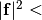
tol
-
qm_args¶ Arguments used to initialise QM potential
-
qm_args_str¶ Arguments used by QM potential
-
qm_buffer_hops¶ Number of bond hops used for buffer region
-
qm_calc_force_error¶ Do a full QM calculation at each stage in extrap and interp to measure force error
-
qm_clusters¶ Should we carve clusters? Default true.
-
qm_cp2k¶ Enable CP2K mode. Default false.
-
qm_even_electrons¶ Discard a hydrogen if necessary to give an overall non-spin-polarised cluster
-
qm_extra_args_str¶ Extra arguments passed to ForceMixing potential
-
qm_force_periodic¶ Force clusters to be periodic in
direction.
-
qm_hysteretic_buffer¶ If true, manage the buffer region hysteritcally
-
qm_hysteretic_buffer_inner_radius¶ Inner radius used for hystertic buffer region
-
qm_hysteretic_buffer_nneighb_only¶ Should hysteretic buffer be formed by nearest neighbor hopping?
-
qm_hysteretic_buffer_outer_radius¶ Outer radius used for hystertic buffer region
-
qm_hysteretic_connect¶ Enable hysteretic connectivity
-
qm_hysteretic_connect_cluster_radius¶ Radius other which to keep track of hysteretic connectivity info. Default 10.0 A.
-
qm_hysteretic_connect_inner_factor¶ Inner bond factor. Default 1.2
-
qm_hysteretic_connect_outer_factor¶ Outer bond factor. Default 1.5
-
qm_little_clusters¶ One big cluster or lots of little ones?
-
qm_randomise_buffer¶ Randomise positions of outer layer of buffer atoms slightly to avoid systematic errors.
-
qm_rescale_r¶ If true, rescale space in QM cluster to match QM lattice constant
-
qm_terminate¶ Terminate clusters with hydrogen atoms
-
qm_transition_hops¶ Number of transition hops used for buffer region
-
qm_vacuum_size¶ Amount of vacuum surrounding cluster in non-periodic directions (
and at least). Unit:~AA{}.
-
quasi_static_tip_move_tol¶ How far cracktip must advance before we consider fracture to have occurred.
-
selection_cutoff_plane¶ Only atoms within this distance from crack tip are candidates for QM selection. Unit: AA{}.
-
selection_directionality¶ Require good directionality of spring space spanning for atoms in embed region.
-
selection_edge_tol¶ Size of region at edges of crack slab which is ignored for selection purposes.
-
selection_ellipse¶ Principal radii of selection ellipse along
, and in AA{}.
-
selection_ellipse_bias¶ Shift applied to ellipses, expressed as fraction of ellipse radius in
direction.
-
selection_ellipse_buffer¶ Difference in size between inner and outer selection ellipses, i.e. amount of hysteresis.
-
selection_max_qm_atoms¶ Maximum number of QM atoms to select
-
selection_method¶ One of
static,coordination,crack_front
-
selection_update_interval¶ intervals between QM selection updates, defaults to 0.0_dp meaning
every step
-
simulation_classical¶ Perform a purely classical simulation
-
simulation_force_initial_load_step¶ Force a load step at beginning of simulation
-
simulation_initial_state¶ Initial state. Overrides value read from input atoms structure
-
simulation_seed¶ Random number seed. Use zero for a random seed, or a particular value to repeat a previous run.
-
simulation_task¶ Task to perform:
md,minim, etc.
-
-
class
quippy.crack.ConstantStrainRate(orig_height, delta_strain, mask=None)[source]¶ Constraint which increments epsilon_yy at a constant strain rate
Rescaling is applied only to atoms where mask is True (default is all atoms)
-
quippy.crack.crack_is_edge_atom(slab, i, edge_gap)¶ Returns true if atom
iis near to an open surface of slab. Open surfaces are planes at 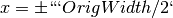 and .
“Near to” means within
.
“Near to” means within edge_gapof the surface.Parameters: slab :
Atomsobjecti : input int
edge_gap : input float
Returns: ret_crack_is_edge_atom : int
References
Routine is wrapper around Fortran routine
crack_is_edge_atomdefined in file src/Utils/cracktools.f95.
-
quippy.crack.crack_parse_name(crackname)¶ Parse crack name in the format is (ijk)[lmn], with negative numbers denoted by a trailing
b(short forbar), e.g.(111)[11b0]Axes of crack slab returned as matrix with columns
,:math:mathbf{y},:math:mathbf{z}.
matrix with columns
,:math:mathbf{y},:math:mathbf{z}.Parameters: crackname : input string(len=-1) Returns: axes : rank-2 array(‘d’) with bounds (3,3) References
Routine is wrapper around Fortran routine
crack_parse_namedefined in file src/Utils/cracktools.f95.
-
quippy.crack.crack_hybrid_calc_args(qm_args_str, extra_qm_args, mm_args_str, extra_mm_args, extra_args_str)¶ Parameters: qm_args_str : input string(len=-1)
extra_qm_args : input string(len=-1)
mm_args_str : input string(len=-1)
extra_mm_args : input string(len=-1)
extra_args_str : input string(len=-1)
Returns: ret_crack_hybrid_calc_args : string(len=1024)
References
Routine is wrapper around Fortran routine
crack_hybrid_calc_argsdefined in file src/Utils/cracktools.f95.
-
quippy.crack.crack_g_to_k(g, e, v[, mode])¶ Convert from energy release rate
to stress intensity factor
Units: G (J/m:math:^2), E (GPa), K (Pa sqrt(m))Parameters: g : input float
e : input float
v : input float
mode : input string(len=-1), optional
Returns: ret_k : float
References
Routine is wrapper around Fortran routine
crack_g_to_kdefined in file src/Utils/cracktools.f95.
-
quippy.crack.percolation_step(grid)¶ Parameters: grid : in/output rank-3 array(‘i’) with bounds (qp_n0,qp_n1,qp_n2) Returns: ret_percolation_step : int References
Routine is wrapper around Fortran routine
percolation_stepdefined in file src/Utils/cracktools.f95.
-
quippy.crack.crack_setup_marks(crack_slab, params)¶ Parameters: crack_slab :
Atomsobjectparams :
CrackParamsobjectReferences
Routine is wrapper around Fortran routine
crack_setup_marksdefined in file src/Utils/cracktools.f95.
-
quippy.crack.crack_update_selection_crack_front(at, params)¶ Parameters: at :
Atomsobjectparams :
CrackParamsobjectReferences
Routine is wrapper around Fortran routine
crack_update_selection_crack_frontdefined in file src/Utils/cracktools.f95.
-
quippy.crack.crack_is_topbottom_edge_atom(slab, i, edge_gap)¶ Returns true if atom
iis the topbottom surface of slab Topbottom surfaces are planes atParameters: slab :
Atomsobjecti : input int
edge_gap : input float
Returns: ret_crack_is_topbottom_edge_atom : int
References
Routine is wrapper around Fortran routine
crack_is_topbottom_edge_atomdefined in file src/Utils/cracktools.f95.
-
quippy.crack.crack_make_slab(params, classicalpot)¶ Parameters: params :
CrackParamsobjectclassicalpot :
Potentialobjectcrack_slab :
Atomsobjectwidth : float
height : float
e : float
v : float
v2 : float
bulk :
AtomsobjectReferences
Routine is wrapper around Fortran routine
crack_make_slabdefined in file src/Utils/cracktools.f95.
-
quippy.crack.crack_apply_strain_ramp(at, g1, g2, d1, d2, d3, d4)¶ Parameters: at :
Atomsobjectg1 : input float
g2 : input float
d1 : input float
d2 : input float
d3 : input float
d4 : input float
References
Routine is wrapper around Fortran routine
crack_apply_strain_rampdefined in file src/Utils/cracktools.f95.
-
quippy.crack.crack_strain_to_g(strain, e, v, height)¶ Calculate energy release rate
from strain using
:math:G = \frac{1}{2} \frac{E}{1-\nu^2} \epsilon^2 h:math:from thin strip result. Quantities are:strain,:math:epsilon, dimensionless ratio 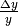;E,, Young’s modulus, GPa;
v,, Poisson ratio, dimensionless;
height, AA{}, 10:math:^{-10}`~m;
``G`, Energy release rate, J/m:math:^2.Parameters: strain : input float
e : input float
v : input float
height : input float
Returns: ret_crack_strain_to_g : float
References
Routine is wrapper around Fortran routine
crack_strain_to_gdefined in file src/Utils/cracktools.f95.
-
quippy.crack.crack_find_tip_coordination(at, params[, n_tip_atoms, tip_indices])¶ Return
coordinate of rightmost undercoordinated atomParameters: at :
Atomsobjectparams :
CrackParamsobjectn_tip_atoms : in/output rank-0 array(int,’i’), optional
tip_indices : in/output rank-1 array(‘i’) with bounds (qp_n0), optional
Returns: ret_crack_pos : rank-1 array(‘d’) with bounds (2)
References
Routine is wrapper around Fortran routine
crack_find_tip_coordinationdefined in file src/Utils/cracktools.f95.
-
quippy.crack.in_ellipse(d, ellipse)¶ Return true if the point
dis within an ellipse centred at the origin with the, , and radii specifeid in the vector ellipse.Parameters: d : input rank-1 array(‘d’) with bounds (3)
ellipse : input rank-1 array(‘d’) with bounds (3)
Returns: ret_in_ellipse : int
References
Routine is wrapper around Fortran routine
in_ellipsedefined in file src/Utils/cracktools.f95.
-
quippy.crack.crack_find_tip_local_energy(at, params)¶ Parameters: at :
Atomsobjectparams :
CrackParamsobjectReferences
Routine is wrapper around Fortran routine
crack_find_tip_local_energydefined in file src/Utils/cracktools.f95.
-
quippy.crack.crack_update_selection(at, params)¶ Parameters: at :
Atomsobjectparams :
CrackParamsobjectReferences
Routine is wrapper around Fortran routine
crack_update_selectiondefined in file src/Utils/cracktools.f95.
-
quippy.crack.crack_mm_calc_args(mm_args_str, extra_mm_args, extra_args_str)¶ Parameters: mm_args_str : input string(len=-1)
extra_mm_args : input string(len=-1)
extra_args_str : input string(len=-1)
Returns: ret_crack_mm_calc_args : string(len=1024)
References
Routine is wrapper around Fortran routine
crack_mm_calc_argsdefined in file src/Utils/cracktools.f95.
-
quippy.crack.crack_check_coordination_boundaries(at, params)¶ Parameters: at :
Atomsobjectparams :
CrackParamsobjectReferences
Routine is wrapper around Fortran routine
crack_check_coordination_boundariesdefined in file src/Utils/cracktools.f95.
-
quippy.crack.select_ellipse(at, ellipse, ellipse_bias, list, c)¶ Select atoms in ellipse centred on an atom and with given principal radii
Parameters: at :
Atomsobjectellipse : input rank-1 array(‘d’) with bounds (3)
Principal radii of ellipse in
, and directionsellipse_bias : input rank-1 array(‘d’) with bounds (3)
Shift ellipse, positive values forward
list :
TableobjectOn exit contains indexes of selected atoms, which are also reachable by nearest neighbour bond hopping starting from c
c : input int
Ellipse is centred around atom
c.References
Routine is wrapper around Fortran routine
select_ellipsedefined in file src/Utils/cracktools.f95.
-
quippy.crack.crack_uniform_load(at, params, l_crack_pos, r_crack_pos, zone_width, n0, n1[, eps, g, apply_load])¶ Rescale atoms in slab, with atoms in front of either crack tip strained in y direction by
strainand atoms behind crack tip rigidly shifted to keep top and bottom edges flat. A transition zone is created in between with linearly varying strain to avoid creation of defects.-------------------------------------- | | | | | | | | |___| | | | | | | | | | | |___| | | | | | | | | | 1 | 2 | 3 | 4 | 5 | -------------------------------------- :: ====== =========================================== ====== Region Position Load ====== =========================================== ====== 1 x < l_crack_pos - zone_width G 2 l_crack_pos - zone_width <= x < l_crack_pos G - 0 3 l_crack_pos < x < r_crack_pos 0 4 r_crack_pos < x <= r_crack_pos + zone_width 0 - G 5 x r_crack_pos + zone_width G ====== =========================================== ======
Parameters: at :
Atomsobjectparams :
CrackParamsobjectl_crack_pos : input float
r_crack_pos : input float
zone_width : input float
eps : input float, optional
g : input float, optional
apply_load : input int, optional
n0 : input int
shape(qp_disp,0)
n1 : input int
shape(qp_disp,1)
Returns: disp : rank-2 array(‘d’) with bounds (qp_n0,qp_n1)
References
Routine is wrapper around Fortran routine
crack_uniform_loaddefined in file src/Utils/cracktools.f95.
-
quippy.crack.crack_g_to_strain(g, e, v, height)¶ Calculate from
, inverse of above formula.
Units are as the same as crack_strain_to_gParameters: g : input float
e : input float
v : input float
height : input float
Returns: ret_crack_g_to_strain : float
References
Routine is wrapper around Fortran routine
crack_g_to_straindefined in file src/Utils/cracktools.f95.
-
quippy.crack.crack_k_to_g(k, e, v[, mode])¶ Convert from stress intensity factor
to energy release rate
Units: G (J/m:math:^2), E (GPa), K (Pa sqrt(m))Parameters: k : input float
e : input float
v : input float
mode : input string(len=-1), optional
Returns: ret_g : float
References
Routine is wrapper around Fortran routine
crack_k_to_gdefined in file src/Utils/cracktools.f95.
-
quippy.crack.crack_update_connect(at, params)¶ Use hysteretic version of calc_connect() so we can use relative cutoffs Update the connectivity of a crack slab. calc_connect is only called if necessary (i.e. if the maximal atomic displacement is bigger than
params.md(params.md_stanza)%recalc_connect_factor*params.md(params.md_stanza)%crustThennandchanged_nnproperties are updated each call, with the (cheaper) nearest neighbour calc_connect always being perforemd.Parameters: at :
Atomsobjectparams :
CrackParamsobjectReferences
Routine is wrapper around Fortran routine
crack_update_connectdefined in file src/Utils/cracktools.f95.
-
quippy.crack.crack_find_surface_atoms(at)¶ Parameters: at : AtomsobjectReferences
Routine is wrapper around Fortran routine
crack_find_surface_atomsdefined in file src/Utils/cracktools.f95.
-
quippy.crack.crack_find_tip(at, params)¶ Parameters: at :
Atomsobjectparams :
CrackParamsobjectReturns: crack_tips :
TableobjectReferences
Routine is wrapper around Fortran routine
crack_find_tipdefined in file src/Utils/cracktools.f95.
-
quippy.crack.crack_calc_load_field(crack_slab, params, classicalpot, load_method, overwrite_pos, mpi)¶ Parameters: crack_slab :
Atomsobjectparams :
CrackParamsobjectclassicalpot :
Potentialobjectload_method : input string(len=-1)
overwrite_pos : input int
mpi :
MPI_contextobjectReferences
Routine is wrapper around Fortran routine
crack_calc_load_fielddefined in file src/Utils/cracktools.f95.
-
quippy.crack.crack_apply_load_increment(at[, g_increment])¶ Increase the load by adding the the load displacement field to the atomic positions. The routine recalculates the loading G and stores it in the atom parameter dictionary.
Parameters: at :
Atomsobjectg_increment : input float, optional
References
Routine is wrapper around Fortran routine
crack_apply_load_incrementdefined in file src/Utils/cracktools.f95.
-
quippy.crack.crack_measure_g(at, e, v, orig_height)¶ Measure the current height of slab and calculate energy release rate
from current and original
heights and elastic constants and , using the equation
:math:`` G = frac{1}{2} frac{E}{1-nu^2} frac{{h - h_0}^2}{h_0} :math:``
where is the original height and the new height.
Otherwise, symbols and units are the same as in crack_strain_to_g.Parameters: at :
Atomsobjecte : input float
v : input float
orig_height : input float
Returns: ret_g : float
References
Routine is wrapper around Fortran routine
crack_measure_gdefined in file src/Utils/cracktools.f95.
-
quippy.crack.crack_k_field(at, k[, mode, sig, disp, do_sig, do_disp])¶ Calculate Irwin K-field stresses and/or displacements for all atoms in
at. Atomic positions should be the original undistorted bulk crystal positions.YoungsModulusandPoissonRatio_yxparameters are extracted fromat, along withCrackPosto specify the location of the crack tip. If neithersignordispare present thenn properties are added to at if do_disp or do_sig are true. Stress is in 6 component Voigt notation: 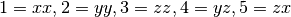 and , and
displacement is a Cartesian vector 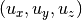.
, and
displacement is a Cartesian vector 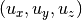.Parameters: at :
Atomsobjectk : input float
mode : input string(len=-1), optional
sig : in/output rank-2 array(‘d’) with bounds (qp_n0,qp_n1), optional
disp : in/output rank-2 array(‘d’) with bounds (qp_n2,qp_n3), optional
do_sig : input int, optional
do_disp : input int, optional
References
Routine is wrapper around Fortran routine
crack_k_fielddefined in file src/Utils/cracktools.f95.
-
quippy.crack.crack_find_tip_percolation(at, params)¶ Locate crack tips within
atusing a percolation algorithm. A grid with cells of sideparams.crack_tip_grid_sizeis initialised and populated with 1s in cells containing atoms and 0s where there are no atoms. The percolation is then seeded in the void at (0,0,0) for a double-ended crack or (-OrigWidth/2, 0, 0) for a single-ended crack, and then spreads between connected cells like a forest fire. A filter is used to remove local minima closer thanparams.crack_tip_min_separationcells from one another. The result is a Table with realsize=3 containing the coordinates of the crack tips detected. If a through-going crack is detected the result table will have size zero.Parameters: at :
Atomsobjectparams :
CrackParamsobjectReturns: crack_tips :
TableobjectReferences
Routine is wrapper around Fortran routine
crack_find_tip_percolationdefined in file src/Utils/cracktools.f95.
-
quippy.crack.crack_update_selection_coordination(at, params)¶ Update QM selection region for a crack configuration using the
nnandchanged_nnproperties and theCrackPosparameter from the atoms structure, as well as the selection parameters inparams. Ifupdate_embedis true then the embed region is updated, otherwise we simply recompute the fit region from the embed region. The value ofnum_directionalityreturned can be passed to adjustable_potential_init.Parameters: at :
Atomsobjectparams :
CrackParamsobjectReferences
Routine is wrapper around Fortran routine
crack_update_selection_coordinationdefined in file src/Utils/cracktools.f95.
-
quippy.crack.crack_make_seed(crack_slab, params)¶ Parameters: crack_slab :
Atomsobjectparams :
CrackParamsobjectReferences
Routine is wrapper around Fortran routine
crack_make_seeddefined in file src/Utils/cracktools.f95.
-
quippy.crack.crack_check_coordination(at, params, j[, y, x_boundaries, neigh_removed, at_for_connectivity])¶ Parameters: at :
Atomsobjectparams :
CrackParamsobjectj : input int
y : in/output rank-0 array(float,’d’), optional
x_boundaries : input int, optional
neigh_removed : in/output rank-1 array(‘i’) with bounds (qp_n0), optional
at_for_connectivity :
Atomsobject, optionalReferences
Routine is wrapper around Fortran routine
crack_check_coordinationdefined in file src/Utils/cracktools.f95.
-
quippy.crack.crack_print(*args, **kwargs)¶ Print crack slab to XYZ file, using properties defined in ‘params%io_print_properties’ or all properties if ‘params%io_print_all_properties’ is true.
Routine is wrapper around Fortran interface
crack_printcontaining multiple routines:-
quippy.crack.crack_print(at, cio, params) Parameters: - at (
Atomsobject) – - cio (
CInOutputobject) – - params (
CrackParamsobject) –
Routine is wrapper around Fortran routine
crack_print_ciodefined in file src/Utils/cracktools.f95.- at (
-
quippy.crack.crack_print(at, filename, params) Parameters: - at (
Atomsobject) – - filename (input string(len=-1)) –
- params (
CrackParamsobject) –
Routine is wrapper around Fortran routine
crack_print_filenamedefined in file src/Utils/cracktools.f95.- at (
-
-
quippy.crack.crack_strain_energy_release_rate(at, bulk=None, f_min=0.8, f_max=0.9, stem=None, avg_pos=False)[source]¶ Compute strain energy release rate G from elastic potential energy in a strip
-
quippy.crack.crack_find_griffith_load(a, b, pot, relax=False)[source]¶ Given two configurations (a, b) which differ by one broken bond, find the Griffith load, that is the load at which a and b have the same energy accorinding to the model potential pot.
Returns (strain, G, a_rescaled, b_rescaled).
-
quippy.crack.stress_intensity_factor(at)[source]¶ Returns stress instensity factor for mode I loading (K_I) in MPa sqrt(m)
-
quippy.crack.make_crack_advance_map(atoms, tol=0.001)[source]¶ Find mapping from atom indices to the index of atom one step ahead of them in the crack propagation direction (i.e. along +x).
Requires ‘LatticeConstant’, ‘CleavagePlane’, and ‘CrackFront’ to be available in atoms.info dictionary.
Returns integer array of shape (len(atoms),), and also adds a new array ‘advance_map’ into the Atoms object.
-
quippy.crack.find_crack_tip_coordination(atoms, edge_tol=10.0, strip_height=30.0, nneightol=1.3)[source]¶ Return position of crack tip in atoms, based on atomic coordination.
If atoms does not contain an advance_map property, then
make_crack_advance_map()is called to generate the map.Parameters: atoms : :class:`~.Atoms’ object
The Atoms object containing the crack slab.
edge_tol : float
Distance from edge of system within which to exclude undercoodinated atoms.
strip_height : float
Height of strip along centre of slab in which to look for the track.
nneightol : float
Nearest neighbour tolerance, as a fraction of sum of covalent radii of atomic species.
Returns: crack_pos : array
x, y, and z coordinates of the crack tip. Also set in
CrackPosinatoms.infodictionary.tip_atoms : array
Indices of atoms near the tip Also set in
crack_tipproperty.
-
quippy.crack.irwin_modeI_crack_tip_stress_field(K, r, t, xy_only=True, nu=0.5, stress_state='plane strain')[source]¶ Compute Irwin singular crack tip stress field
Parameters: K : float
Mode I stress intensity factor. Units should match units of r.
r : array_like
Radial distances from crack tip. Can be a multidimensional array to evaluate stress field on a grid.
t : array_like
Angles from horzontal line y=0 ahead of crack tip, measured anticlockwise. Should have same shape as r.
xy_only : bool
If True (default) only xx, yy, xy and yx components will be set.
nu : float
Poisson ratio. Used only when
xy_only=False, to determine zz stressesstress_state : str
One of”plane stress” or “plane strain”. Used if xyz_only=False to determine zz stresses.
Returns: sigma : array with shape
r.shape + (3,3)
-
quippy.crack.strain_to_G(strain, E, nu, orig_height)[source]¶ Convert from strain to energy release rate G for thin strip geometry
Parameters: strain : float
Dimensionless ratio
(current_height - orig_height)/orig_heightE : float
Young’s modulus relevant for a pull in y direction sigma_yy/eps_yy
nu : float
Poission ratio -eps_yy/eps_xx
orig_height : float
Unstrained height of slab
Returns: G : float
Energy release rate in units consistent with input (i.e. in eV/A**2 if eV/A/fs units used)
-
quippy.crack.G_to_strain(G, E, nu, orig_height)[source]¶ Convert from energy release rate G to strain for thin strip geometry
Parameters: G : float
Energy release rate in units consistent with E and orig_height
E : float
Young’s modulus relevant for a pull in y direction sigma_yy/eps_yy
nu : float
Poission ratio -eps_yy/eps_xx
orig_height : float
Unstrained height of slab
Returns: strain : float
Dimensionless ratio
(current_height - orig_height)/orig_height
-
quippy.crack.get_strain(atoms)[source]¶ Return the current strain on thin strip configuration atoms
Requires unstrained height of slab to be stored as
OrigHeightkey inatoms.infodictionary.Also updates value stored in
atoms.info.
-
quippy.crack.get_energy_release_rate(atoms)[source]¶ Return the current energy release rate G for `atoms
Also updates value stored in
atoms.infodictionary.
-
quippy.crack.get_stress_intensity_factor(atoms)[source]¶ Return stress intensity factor K_I
Also updates value stored in
atoms.infodictionary.
-
quippy.crack.fit_crack_stress_field(atoms, r_range=(0.0, 50.0), initial_params=None, fix_params=None, sigma=None, avg_sigma=None, avg_decay=0.005, calc=None, verbose=False)[source]¶ Perform a least squares fit of near-tip stress field to Irwin solution
Stresses on the atoms are fit to the Irwin K-field singular crack tip solution, allowingthe crack position, stress intensity factor and far-field stress components to vary during the fit.
Parameters: atoms :
AtomsobjectCrack system. For the initial fit, the following keys are used from the
infodictionary:YoungsModulusPossionRatio_yxG— current energy release ratestrain— current applied strainCrackPos— initial guess for crack tip position
The initial guesses for the stress intensity factor
Kare far-field stresssigma0are computed fromYoungsModulus,PoissonRatio_yx,Gandstrain, assuming plane strain in thin strip boundary conditions.On exit, new
K,sigma0andCrackPosentries are set in theinfodictionary. These values are then used as starting guesses for subsequent fits.r_range : sequence of two floats, optional
If present, restrict the stress fit to an annular region
r_range[0] <= r < r_range[1], centred on the previous crack position (from theCrackPosentry inatoms.info). If r_range isNone, fit is carried out for all atoms.initial_params : dict
Names and initial values of parameters. Missing initial values are guessed from Atoms object.
fix_params : dict
Names and values of parameters to fix during the fit, e.g.
{y0: 0.0}to constrain the fit to the line y=0sigma : None or array with shape (len(atoms), 3, 3)
Explicitly provide the per-atom stresses. Avoids calling Atoms’ calculators
get_stresses()method.avg_sigma : None or array with shape (len(atoms), 3, 3)
If present, use this array to accumulate the time-averaged stress field. Useful when processing a trajectory.
avg_decay : real
Factor by which average stress is attenuated at each step. Should be set to
dt/tauwheredtis MD time-step andtauis a characteristic averaging time.calc : Calculator object, optional
If present, override the calculator used to compute stresses on the atoms. Default is
atoms.get_calculator.To use the atom resolved stress tensor pass an instance of the
AtomResolvedStressFieldclass.verbose : bool, optional
If set to True, print additional information about the fit.
Returns: params : dict with keys
[K, x0, y0, sxx0, syy0, sxy0]Fitted parameters, in a form suitable for passin
IrwinStressFieldconstructor. These are the stress intensity factor K, the centre of the stress field(x0, y0), and the far field contribution to the stress(sxx0, syy0, sxy0).
-
quippy.crack.find_crack_tip_stress_field(atoms, r_range=None, initial_params=None, fix_params=None, sigma=None, avg_sigma=None, avg_decay=0.005, calc=None)[source]¶ Find the position of the crack tip by fitting to the Irwin K-field solution
Fit is carried out using
fit_crack_stress_field(), and parameters have the same meaning as there.See also
-
quippy.crack.plot_stress_fields(atoms, r_range=None, initial_params=None, fix_params=None, sigma=None, avg_sigma=None, avg_decay=0.005, calc=None)[source]¶ Fit and plot atomistic and continuum stress fields
Firstly a fit to the Irwin K-field solution is carried out using
fit_crack_stress_field(), and parameters have the same meaning as for that function. Then plots of the , , 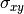
fields are produced for atomistic and continuum cases, and for the
residual error after fitting.
, 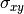
fields are produced for atomistic and continuum cases, and for the
residual error after fitting.
-
quippy.crack.thin_strip_displacement_y(x, y, strain, a, b)[source]¶ Return vertical displacement ramp used to apply initial strain to slab
Strain is increased from 0 to strain over distance 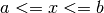. Region is rigidly shifted up/down by
strain*height/2.Here is an example of how to use this function on an artificial 2D square atomic lattice. The positions are plotted before (left) and after (right) applying the displacement, and the horizontal and vertical lines show the strain (red), a (green) and b (blue) parameters.
import matplotlib.pyplot as plt import numpy as np w = 1; h = 1; strain = 0.1; a = -0.5; b = 0.0 x = np.linspace(-w, w, 20) y = np.linspace(-h, h, 20) X, Y = np.meshgrid(x, y) u_y = thin_strip_displacement_y(X, Y, strain, a, b) for i, disp in enumerate([0, u_y]): plt.subplot(1,2,i+1) plt.scatter(X, Y + disp, c='k', s=5) for y in [-h, h]: plt.axhline(y, color='r', linewidth=2, linestyle='dashed') plt.axhline(y*(1+strain), color='r', linewidth=2) for x, c in zip([a, b], ['g', 'b']): plt.axvline(x, color=c, linewidth=2)

Parameters: x : array
y : array
Atomic positions in unstrained slab, centered on origin x=0,y=0
strain : float
Far field strain to apply
a : float
x coordinate for beginning of strain ramp
b : float
x coordinate for end of strain ramp